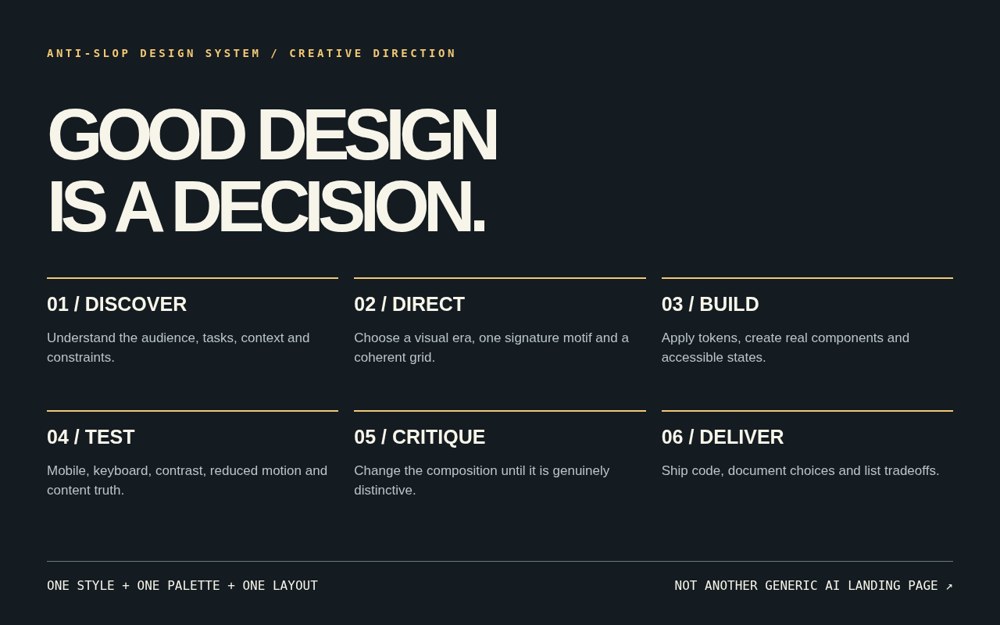

METAmeta
design director
Use before designing any website, application, dashboard or campaign to choose a distinctive historical art direction, coherent tokens, responsive structure and accessible execution instead of generic AI-template UI.